A Kresz-teszt program a KRESZ vizsgára való felkészülést segíti. A program a kérdések végén összesíti az eredményt, így a felhasználó kerülhet dicsőséglistára, illetve szégyenpadra. Dicsőséglistára az kerülhet, aki 27,5 perc alatt jól megválaszolja a kérdéseket, szégyenpadra pedig az, aki 7-nél több rossz választ ad meg.
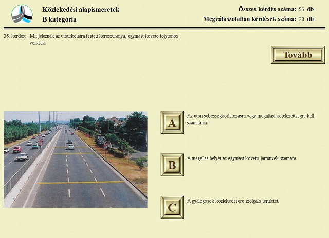A házim egy sokoban játék, SDL-el készült. Klasszikus doboztologatás a zöld bogyóval (aki mindig abba az irányba néz, amerre irányítjuk). Irányítani a nyilakkal, vagy WASD-al kell, lehet újratölteni, pályát léptetni, de csalni nem :). A pályát txt-ből olvassa be. Látványelemek: a pályák, a ranglista (csodálatos kék) és a pálya befejezésekor megjelenő szöveg. A legjellemzőbb a beküldött screenshot (a tesztelés során akkor csináltam új, sokkal egyszerűbb pályákat, amikor rájöttem, hogy ehhez a pályához min 240 lépés kell és még hátravan 15 :D). A képen láthatjuk a pálya sorszámot, a lépések/tolások számát, a még betolásra váró dobozok számát, az eltelt időt és a játékteret.
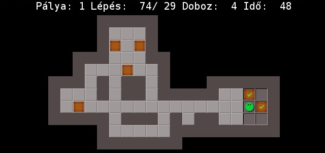Itt az én nagy házimról egy screenshot, amin a stratégiai játékom egyik meccsének egy pillanata látható. A különböző színek egymás ellen vannak, a falvakban vannak parasztok, nyersanyagok és katonák, és a katonákat zászlóaljanként lehet kiküldeni a többi falura (amit aztán elfoglalnak, ha ott kevés ellenséges katona volt.) A sárga négyzettel jelölt falu az én falum, a többit a gép irányítja egy "buta" AI algoritmussal (amit ennek ellenére meglehetősen nehéz leverni).
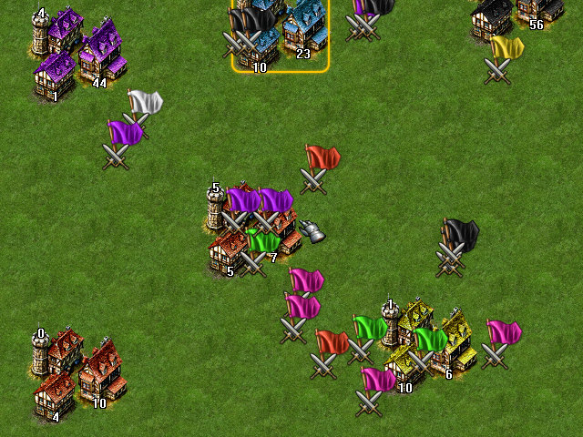Ez a játék első ránézésre egy amőba... és ez félig igaz is. Az egyik játékos, az iksz, tényleg amőbázik, de az ellenfele viszont az atari-go szabályai szerint tud nyerni. Így érthető a játék neve, ez a két játéknak a keresztezése (saját találmány). A program lehetőséget nyújt gép elleni játékra is, aminek a nehézsége állítható. A gépnek (valamilyen érthetetlen okból) jobban megy a matematikailag legelőnyösebb lépés kiválasztása, mert mintha több lépést tudna számba venni adott idő alatt. 60%-os nehézség mellett negyedjére sikerült olyan screenshotot összehoznom amire az volt írva hogy "Gratulálok nyertél."
A programom egy space shooter. A mozgás WASD-vel a lövés pedig space-el valósul meg. A kis akkumulátorok a powerup-ok ettől erősebb lesz a lövés (ezt a hosszból lehet látni és a fejléc power level szintjéből). Az aszteroidák pedig az ellenfelek melyeknek életereje változik (a felhasználó nem tudja mennyi kell beléjük ezért kell a powerup).
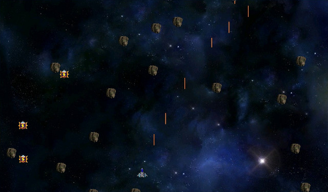Mare Tranquillitatis egy két dimenziós szimulátor játék, amiben a játékos feladata sikeresen landolni a Hold felszínén a kijelölt helyen az Apollo 11 holdkompjával. A küldetést egy aszteroida mező nehezíti meg, amin túljutva a megfelelő landolásra kell figyelni. A navigálásban több műszer is a segítségére van. Ha hibázik a játékos, vagy nekimegy egy aszteroidának, felrobban a hajó. A képernyőképen a landolás látható.

Bombermanó: Egy apró játék klónja, aki már ovis korában is "hardcore gamer" volt, biztosan ismeri: Bomberman. Annak aki mégsem: a játék egy labirintusban játszódik, a két játékos bombák elhelyezésével és felrobbantásával tudj utat teremteni a pályán, emellett persze cél kiiktatni az ellenfelet, ugyancsak bombával. Pacifisták megkereshetik a rejtett kijáratot is, amire ha rálépnek nyernek.
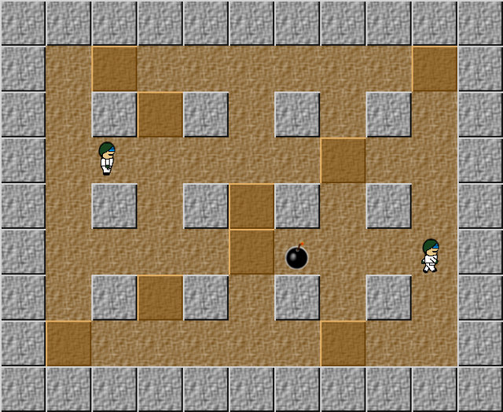A játékom neve "The Pacman Rises", a híres arkád játék és az idei batman film után. Aki látott már Pacman klónt, annak nem kell bemutatni. A játék egyszerű: kis pötty egy pont, a nagy ugyanez + halhatatlanság, a játéknak akkor van vége, ha háromszor megölnek a szellemek, vagy ha felvetted az összes pöttyöt.
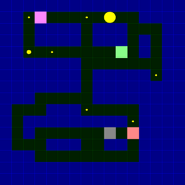Egy szöveges szerepjátékról van szó, amiben harccal lehet aranyat szerezni, amiből lehet vásárolni tárgyakat, pl.: pajzsot és kardot. Az interfész lett szerintem a legmutatósabb, ezért erről készítettem screenshotot. A három fő statisztika a támadás, védelem, és arany. Plusz ezek mellett még a játékos élete is ki van írva minden alkalommal, a csík pedig arányosan csökken a HP-val.
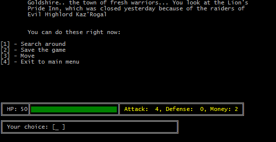Ez egy reversi program. Lehet benne a gép ellen, illetve egymás ellen is játszani. A játékot bármikor meg lehet szakítani a menü gombra kattintva, s később ugyanonnan folytatni. Gép elleni győztes játszma esetén a játékos, miután megadta a nevét, bekerülhet az eredménylistába, ahol helyezése a játszma időtartamának a függvénye. Egy játékos módban a szürke nyílra kattintva kiválaszthatjuk, hogy melyik színnel szeretnénk lenni. Játék közben a soron következő játékos színével megegyező kis pontok jelzik, hogy melyik mezőkre léphet a játékos.
Mivel szeretek teniszezni, ezért adta magát az ötlet, hogy valami ahhoz hasonló legyen a nagy házim témája. A programmal lehetőségünk van gyors játékot (ami egy labdamenet nyeréséből áll), illetve meccset (legalább 3 labdamenetet kell nyerni) játszani. A játékosok lehetnek ember-robot, ember-ember párosok. Az elért eredményeket ki tudja írni fájlba, és onnan beolvasni, amolyan "High score" mintájára. Meccset lehet félbehagyni, ilyenkor el lehet menteni szintén egy fájlba, majd onnan betölteni.
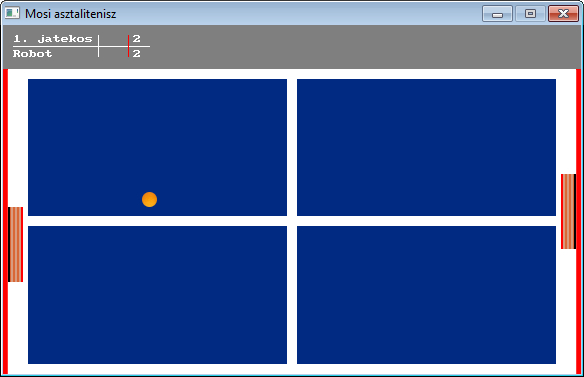2D-s altalanos celu jatekmotor. A motorban egy fejlett vilagitasi futoszalag kapott helyet, amely magja egy elegge leegyszerusitett 2D-s deferred shader (OpenGL), igy (nagyjabol) vegtelen mennyisegu, es tetszoleges formaju lampat lehet elhelyezni egy jelenetben. A vilagitas gamma korrekt, HDR feldolgozason megy keresztul, es normal mappinget hasznal. A post process futoszalag egy teljes szin korrekcios eszkoztarat tartalmaz. A vegeredmeny SMAA segitsegevel van elsimitva, igy csak OpenGL 4.1 (DX11) kompatibilis hardveren fut. A jelenetet tileless eljarassal jelenitem meg, XML fileokbol toltom be.
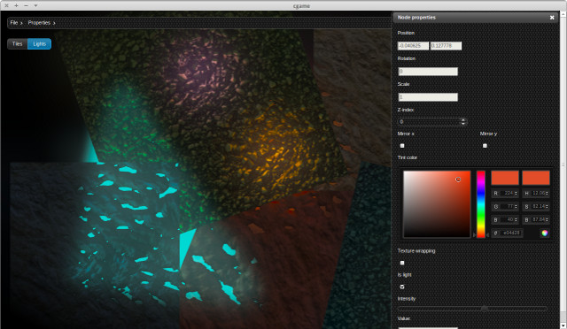Az első képen a játék menüje látható, a másodikon a játékfelület. Bal oldalon a pálya kapott helyet amely színes hatszögekből áll, ezek a nyersanyaglelőhelyek. A kereszteződésekben a települések és a városok, a hatszögek találkozásánál az utak láthatók. Az alsó színes csík mindig a körön lévő játékos színét jelzi. Jobb oldalon az ÉPÍTÉSI KÖLTSÉGEK alá tartozó felirat állandó, a többi felirat változik a játék szakaszától, a körön lévő játékostól és nyersanyagaitól függően.
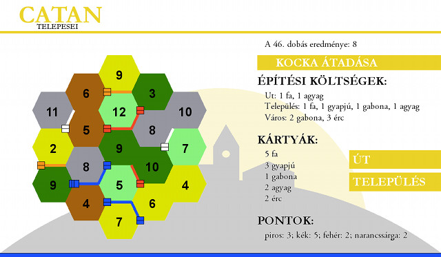A program címe CH4RG3, és az infoc portálon felsorolt ötletek közül a Töltés-játék ihlette. Bár nem feltétlen "szép", hiszen csak minimális programmer art van benne, de a technikai megvalósítására egy kicsit büszke vagyok. A grafikához CSFML-t használtam, és tulajdonképpen objektumorientált a kód.
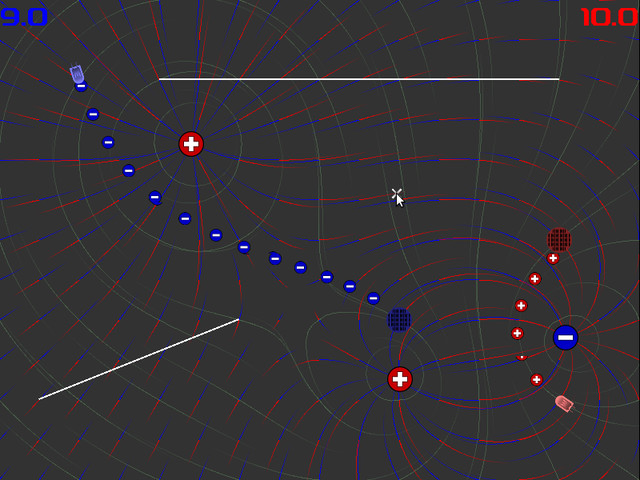A játék lényege, hogy le kell ütni a téglákat a pattogó golyóval. Ha nem tudjuk visszaütni a pálya alján lévő ütővel, vesztünk egy életet. A téglákból véletlenszerűen esik le extra, amit elkapva speciális tulajdonságokra tehetünk szert, pl gyorsabb vagy szélesebb lesz az ütő, extra élet, de lehetnek rosszak is (lassabb ütő stb). A legjobb extra egy ágyú, amelynek segítségével az ütőből lőhetünk ki újabb, vissza nem pattanó golyókat.
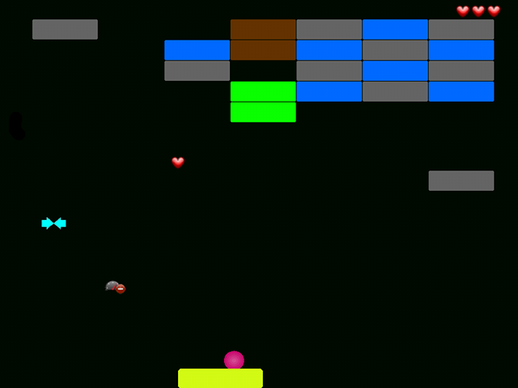